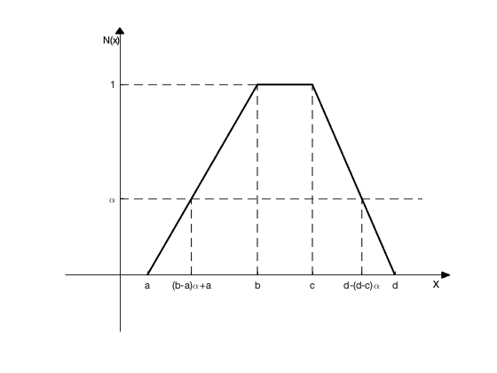
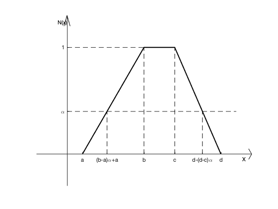

Contents
清理空间
clc ;clear all; close all;
方法一: 基本的参数设置---用于调整图形的形状大小
a =0.5; b=2.5; c=3.5; d=5;
alpha = 0.4;
max_x = d+1;
max_y = 1+0.3;
min_x = -1;
min_y = -0.3;
e1 = (b-a)*alpha + a;
e2 = d-(d-c)*alpha;
figure(1);
x = linspace(a,d);
y = ( (x -a)/(b-a) ).*(a <=x & x<=b ) + 1.*(b<x & x<c) + ((x-d)/(c-d) ).*(c<=x & x<=d);
plot(x,y,'linestyle','-','Color','k','linewidth',2);
hold on;
line([0 d+0.5],[alpha alpha],'linestyle','--','Color','k');
line([0 b],[1 1],'linestyle','--','Color','k');
line([e1 e1],[0 alpha],'linestyle','--','Color','k');
line([e2 e2],[0 alpha],'linestyle','--','Color','k');
line([b b],[0 1],'linestyle','--','Color','k');
line([c c],[0 1],'linestyle','--','Color','k');
ax = gca;
ax.XAxisLocation = 'origin';
ax.YAxisLocation = 'origin';
ax.YLim = [min_y,max_y];
ax.XLim = [min_x,max_x];
ax.XTick = [a, e1, b, c, e2, d];
ax.XTickLabel = {'a','(b-a)\alpha+a','b','c','d-(d-c)\alpha','d'};
ax.YTick = [alpha, 1];
ax.YTickLabel ={'\alpha','1'};
text(max_x*0.95, - max_y * 0.0385,'X');
text(-0.05*max_x, max_y*0.95,'N(x)');
box off
fill([max_x max_x*(1-0.025) max_x*(1-0.025)],[0 max_y*0.013 -max_y*0.013],'k')
fill([0 max_x*0.013 -max_x*0.013],[max_y max_y*(1-0.025) max_y*(1-0.025)],'k')

方法二: 坐标轴是三角形的
clc ;clear all; close all;
a =0.5; b=2.5; c=3.5; d=5;
alpha = 0.4;
max_x = d+1;
max_y = 1+0.3;
min_x = -1;
min_y = -0.3;
e1 = (b-a)*alpha + a;
e2 = d-(d-c)*alpha;
figure(1);
x = linspace(a,d);
y = ( (x -a)/(b-a) ).*(a <=x & x<=b ) + 1.*(b<x & x<c) + ((x-d)/(c-d) ).*(c<=x & x<=d);
plot(x,y,'linestyle','-','Color','k','linewidth',2);
hold on;
line([0 d+0.5],[alpha alpha],'linestyle','--','Color','k');
line([0 b],[1 1],'linestyle','--','Color','k');
line([e1 e1],[0 alpha],'linestyle','--','Color','k');
line([e2 e2],[0 alpha],'linestyle','--','Color','k');
line([b b],[0 1],'linestyle','--','Color','k');
line([c c],[0 1],'linestyle','--','Color','k');
ax = gca;
ax.XAxisLocation = 'origin';
ax.YAxisLocation = 'origin';
ax.YLim = [min_y,max_y];
ax.XLim = [min_x,max_x];
ax.XTick = [a, e1, b, c, e2, d];
ax.XTickLabel = {'a','(b-a)\alpha+a','b','c','d-(d-c)\alpha','d'};
ax.YTick = [alpha, 1];
ax.YTickLabel ={'\alpha','1'};
text(max_x*0.95, - max_y * 0.0385,'X');
text(-0.05*max_x, max_y*0.95,'N(x)');
box off
f1 = @(x) (x + max_y) .*( -0.5 <=x & x<=0 ) + (-x + max_y).*(0<x & x<0.5);
fplot(f1,[-0.1 0.1],'linestyle','-','Color','k','linewidth',0.5);
hold on
x = 5.9:0.001:max_x;
plot(x, -0.5*(x - max_x),'linestyle','-','Color','k','linewidth',0.5);
hold on
plot(x, 0.5*(x - max_x),'linestyle','-','Color','k','linewidth',0.5);
